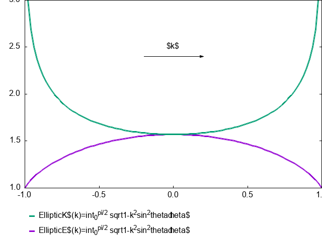

AI-HUB
Table of Contents
1. AI-HUB
1.1. 证件分类
1.2. 上送数据丢失
1.3. UI优化

@startwbs * Business Process Modelling WBS ** Launch the project *** Complete **Stakeholder** Research *** Initial Implementation Plan ** Design phase *** Model of AsIs Processes Completed **** Model of AsIs Processes Completed1 **** Model of AsIs Processes Completed2 *** Measure AsIs performance metrics *** Identify Quick Wins ** Complete innovate phase @endwbs

1.3.1. 根据历史成功识别证件的区域坐标修正区域提示框
1.3.2. 去掉主动超时机制，改为“经过一定时间后”由酒店前台主动取消
1.3.3. 流程图
- OCR识别类
@startuml listopeniconic @enduml

@startuml !procedure $go($txt) Bob -> Alice : $txt !endprocedure !procedure $zyt($title) " {{ salt {^$title item1 item2 $go("Hello") } }} " !endprocedure (*)->" {{ salt {+ List item1 item2 $go("Hello") } }} " as xl xl -down-> $zyt("证件类型") as ocr_selection ocr_selection -> "结束" @enduml
@startuml !$foo = { "company": "Skynet", "employees" : [ {"name" : "alice", "salary": 100 }, {"name" : "bob", "salary": 50} ] } !$attribute_1="name" !$attribute_2="salary" start :The salary of <u>$foo.employees[0][$attribute_1]</u> is <u>$foo.employees[0][$attribute_2]</u>; @enduml
@startuml !function faceComp() !return "{{\nsalt\n{^<b>卡片类\n* <color:green>香港通行证\n* 澳门通行证\n* 台湾通行证\n* ...}\n}}" !endfunction !procedure $go($txt) Bob -> Alice : $txt !endprocedure !$passport_lists = {"title":"护照类", "list":["护照页", "签证页", "盖章页"]} !$card_lists = {"title":"卡片类", "list":["香港通行证", "澳门通行证", "台湾通行证"]} !procedure $ocrlist($salt) {{ salt {^<b>$salt.title !foreach type in $salt.list * <color:green><&credit-card>type !endfor * <&credit-card><&ellipses> } }} !endprocedure start repeat :{{\nsalt\n{+<b>小屏待机界面\n[OCR识别]}\n}}; ->点击OCR识别; :启动图片扫描; switch (算法返回结果) case (识别失败) :小屏幕提示识别失败; case (卡片类) :$ocrlist($card_lists); -> if(正面?(提取到人脸)) then (yes) :大屏开启人脸识别比对; endif :小屏提示扫描另外一面; case (护照类) :$ocrlist($passport_lists); -> if(含头像信息) then (yes) :同步开启人脸比对; :faceComp(); endif :提示扫描护照剩余其他必须页; endswitch repeat while(true) :json test{ "type":1 }; @enduml
@startjson { "类型值":"类型说明", "1": "护照页", "2": "签证页", "3": "信息页" } @endjson
@startuml object AlgType map "**算法类型 ==> 业务类型**" as CC{ 算法值 *--> AlgType 1 => 免签护照 2 => 护照 ... => ... 100 => 拍照(拍照按钮触发) 101 => 免签护照(免签Radio按钮触发) 102 => 无签证护照(无签证Radio按钮触发) } class UsrSelectable{ boolean : y_or_n Number[] new_type } note right of UsrSelectable::new_type 可选择的新类型列表(业务角度) 比如： 护照 --> 免签护照 护照 --> 无签证护照 end note class Prompt{ String TextPrompt ImageBtn UIPrompt } class IDCtrl{ Int key_type UsrSelectable selectable Number[] min_set boolean autosubmit Prompt prompt? } note right of IDCtrl::key_type “业务角度”的证件类型，非算法返回的类型值 比如：护照、免签护照、无签证护照分别对应三种类型 end note note right of IDCtrl::min_set 使能"提交按钮"最小集 end note note right of IDCtrl::autosubmit true: 满足最小集后是自动提交上传数据 false: 满足最小集后只使能提交按钮 end note IDCtrl::selectable --> UsrSelectable IDCtrl::key_type --> CC IDCtrl::min_set --> AlgType IDCtrl::prompt --> Prompt object IDCtrlObjectArray IDCtrlObjectArray : key_type = 1 IDCtrlObjectArray : usr_selectable = "yes" IDCtrlObjectArray : -- IDCtrlObjectArray : key_type = 2 IDCtrlObjectArray : usr_selectable = "no" IDCtrlObjectArray : -- IDCtrlObjectArray : key_type = 3 IDCtrlObjectArray : usr_selectable = "no" object AlgType{ 1 = "护照信息页" 2 = "护照签证页" 3 = "港澳通行证" 100 = "手工选择免签" 101 = "手工选择无签证" 102 = "拍照类证件" } object CurID{ key_type = 1 avaliable_set = [2, 100] } CurID::key_type --> IDCtrlObjectArray note right of CurID::key_type 当次入住办理流程的业务证件类型 能否(比如通过用户交互、或人脸 通用类型转为特定证件类型)切换为新类型， 需要查 key_type 相同的 IDCtl对象的 selectable end note @enduml
2. 天旅 ATTACH
2.1. 旅客信息表
2.2. 方案
2.2.1. 数据库唯一性检测方案
@startuml title "数据库&节点逻辑判断流程图" start :启动; :检查有无数据库服务port配置表(不同于代码默认值); if(有port特殊配置) then(yes) :port使用特殊配置值; note left:香格里拉特殊需求配置方案 else(no) :port使用代码默认值; endif label zyt :检查桌面、各逻辑分区根目录; if (存在数据库) then (yes) :提示联系客服或运维\n对数据库做存档维护; ->点击退出(唯一)按钮; :程序退出; end else (no) :检查天旅安装目录; if (存在数据库) then (yes) :节点角色=主节点候选; else(no) :节点角色=子节点候选; endif endif :启动60秒“节点角色判定”定时器; if (创建线程) then (子线程) repeat : 进程执行; switch(节点角色?) case(主节点) if (收到port一致的主节点"声明广播") then(yes) :报错提示\n多个相同端口主节点冲突\n主节点IP列表...\n请截图后联系运维解决部署; ->点击退出(唯一)按钮; :程序退出; end else(no) if(收到"主节点查询"广播?) then (yes) if(port一致?) then(yes) :向该IP地址发送定向广播回应\n如定向广播会被路由器屏蔽\n则做非定向广播回应; endif else(no:定时唤醒) :发送含port信息的主节点声明广播; endif endif case(子节点) if(收到和port一致的"主节点声明"广播) then(yes) if(主节点IP已赋值？ ) then(yes) if(主节点IP ==“主节点声明”广播IP?) then(no) :弹窗提示用户确认(对于自动分配IP的情况特殊考虑?); :更新主节点IP; else(yes) endif else (no) :主节点IP赋值; endif else(no) endif case (主节点候选) if (收到port一致的主节点"声明广播") then(yes) :报错提示\n多个相同端口主节点冲突\n主节点IP列表...\n请截图后联系运维解决部署; ->点击退出(唯一)按钮; :程序退出; end else(no) if(角色判定定时器超时) then(yes) :节点角色=主节点; :启动 60秒 循环"主节点声明广播定时器"; :唤醒主进程; else(no) :发送指定port的"主节点查询"广播; endif endif case(子节点候选) if(收到和port一致的"主节点声明"广播) then(yes) :赋值主节点IP; :节点角色=子节点; :唤醒主进程; else(no) if(角色判定定时器超时) then(yes) :提示:请检查确认主节点天旅客户端是否已启动，网络是否通畅。\n如主节点天旅正常启动，网络正常，请联系客服; if(点击退出) then(yes) :程序退出; end else(点击继续) :复位"角色判定定时器"; endif endif :发送指定port的"主节点查询"广播; endif endswitch ->进程睡眠(可通过定时超时&广播事件唤醒); repeat while(唤醒) ->进程终止; else(主线程) :状态显示(系统配置中,请稍候); repeat :进程休眠(等待子进程唤醒); ->被唤醒; repeat while(节点角色确定?) is(no) not(yes) repeat :业务办理; note right: 作为子节点，业务数据存取失败时\n将节点角色=子节点候选\n启动"角色判定定时器"\n即刻发送"主节点查询广播"\n休眠主进程 note right: 上述异常处理可暂不做强制要求 repeat while(子进程检测到异常事件强制退出?) is(no) not(yes) endif end @enduml

- 数据库&主节点唯一性测试案例
案例1. a. 测试条件&步骤&期望结果： a) 单机测试 b) 在电脑桌面、各逻辑分区根目录存在多个数据库 c) 期望结果：天旅客户端报错，提示联系运维或客服 案例2. a. 测试条件&步骤&期望结果 a) 单机测试、同局域网内无主节点运行 b) 在电脑桌面、各逻辑分区根目录无数据库，天旅安装目录也不能存在数据库 c) 启动天旅超过1分钟 d) 期望结果：天旅客户端提示类似“请检查网络问题或确认主节点是否运行正常” 案例3. a. 测试条件&步骤&期望结果： a) 同一局域网内,多机测试 b) 先运行一个主节点1和一个子节点1 c) 配置另外一台PC作为主节点2(数据库服务端口和主节点1相同) d) 期望结果：
- 新部署的主节点、之前的主节点均能提示异常，通知联系运维或客服
- 同一个局域网内的子节点提示类似“检测到主节点发生变化，请确认是否在做运维变更”
案例4. a. 测试条件&步骤&期望结果: a) 同一局域网内,多机测试 b) 先运行一个主节点1和一个子节点1 c) 配置另外一台PC作为主节点2(数据库服务端口port2和主节点1不同) d) 等时间超过2分钟 a) 期望结果：主节点1和子节点1运行正常 e) 配置另外一台pc作为字节点2，数据服务器端口配置为port2 f) 在子节点2办理一笔入住业务 a) 期望结果： a) 在主节点1和子节点1上查询不到该入住记录 b) 在主节点2和子节点2上可以查询到该入住记录 案例5. a. 测试条件&步骤&期望结果： a) 双机测试：一台主节点、一台子节点 b) 正常运行过程中关闭主节点电脑天旅客户端 c) 等待时间超过1分钟
- 期望结果：子节点天旅顶部提示框（非模态对话框）提示类似“检测到主节点断开，请及时联系IT部门人员确认网络是否正常，主节点是否运行正常”
d) 重新打开主节点天旅客户端，等待时间超过1分钟
- 期望结果：子节点天旅顶部提示框恢复正常
2.2.2. 天旅和AI-HUB动态绑定方案
@startuml
skinparam ConditionEndStyle hline
scale 4096 height
title "动态绑定流程图"
start
:天旅启动;
if(创建线程) then(绑定关系检测子线程)
repeat
:检查配置文件绑定关系列表(网卡名称+IP)和当前网卡的一致性;
if(配置文件有绑定记录&&绑定记录和当前列表对应网卡一致?) then(no)
:枚举遍历本机当前网卡+IP列表;
if(本机多个网卡?) then(yes)
:弹出对话框，提示由运维人员根据AI-HUB部署情况选择合适的网卡设备;
:根据运维人员的交互选择确定绑定网卡;
else(no)
:选择当前唯一网卡作为绑定网卡;
endif
if(后台or前端?) then(后台任务)
repeat :启动5秒循环广播定时任务;
:向所在子网广播`绑定设备`消息;
:接收并记录AI-HUB的配对响应消息(IP+随机配对码);
repeat while(定时任务停止?) is(no)
note left
每个IP一份记录，如有相同IP且随机码不同，则后收到的覆盖先收到的记录
AI-HUB端，如当前显示的随机配对码消失前收到新的天旅“配对广播”，
AI-HUB端保持随机码不变\n第一期:暂不考虑黑客攻击行为
第二期:AI-HUB生成4字节随机数(记为R1),
和4位数字/大写字母(不含字母I/O、数字0/1,记为R2)
在AI-HUB屏幕显示R2供柜员查看以便在天旅端输入
AI-HUB用R1、R2拼成8字节数据，作为DES密钥和明文数据，
做自加密将加密结果的后4字节(记为MAC),
在"配对请求回应"中发出 IP+R1+MAC
供AI-HUB验证AI-HUB验证通过才做绑定关系切换;
否则切换当前使用的随机数以及显示随机码，
再次发送对"配对请求广播"的回应;
end note
else(前端界面)
repeat :添加配对设备;
:弹出类似左侧提示语的输入框:”;
note left
设备尚未绑定或IP发生变化，请输入配对码以重新绑定设备
在需要绑定的AI-HUB屏幕查看配对码
注："配对" "取消"两个按钮
配对按钮默认置灰不使能，柜员输慢4个字符后，如不匹配，
提示"配对码错误，请确认要绑定的AI-HUB配对码"
输入的"配对码"在收到的AI-HUB响应记录中匹配
(使用同样算法得到一致的MAC)才使能"配对"按钮
end note
if(柜员按钮选择?) then(取消)
break
else (配对)
:弹出继续添加提示框;
endif
repeat while(柜员选择继续添加?) is(yes) not(no)
:停止循环广播定时任务;
endif
if(有待添加设备?) then(yes)
:启动1分钟超时定时器;
while(定时器超时?) is(未超时)
:发送“配对关系广播”;
:(天旅IP+AI-HUB[IP1、IP2...])列表;
note right
AI-HUB可同时收到多个天旅“配对请求广播”
和哪个天旅绑定以“配对关系广播”为准
end note
:阻塞接收广播(5秒超时)
记录 "配对关系广播"IP列表中的AI-HUB TCP连接;
if(收到所有配对AI-HUB的TCP连接?) then(yes)
break
else(no)
endif
if(超时?) then(yes)
:弹出对话框，列出所有未回应的AI-HUB IP列表，提示
“AI-HUB(IP1/IP2/IP3...)配对失败，请拍照当前提示，联系运维人员解决”;
break
endif
end while(超时)
endif
endif
label sleep
:进程睡眠(可定时/(IP变化事件?)唤醒);
repeat while(唤醒?) is(yes)
->超时处理;
-[hidden]->
detach
else
:主线程/数据库&节点监控线程逻辑...;
-[hidden]->
detach
endif
@enduml

3. 问题证件分析
3.1. 香港身份证
| 证件标识 | 通 | 行 | 证 | 号 | 码 | 校验位 | 换证 | 次数 | 有 | 效 | 期 | 校验位 | 性别 | 出 | 生 | 日 | 期 | ||||||||||||
|---|---|---|---|---|---|---|---|---|---|---|---|---|---|---|---|---|---|---|---|---|---|---|---|---|---|---|---|---|---|
| 1 | 2 | 3 | 4 | 5 | 6 | 7 | 8 | 9 | 10 | 11 | 12 | 13 | 14 | 15 | 16 | 17 | 18 | 19 | 20 | 21 | 22 | 23 | 24 | 25 | 26 | 27 | 28 | 29 | 30 |
| C | R | H | 0 | 4 | 2 | 9 | 6 | 3 | 5 | 5 | 1 | 0 | 2 | 6 | 3 | 3 | 0 | 1 | 0 | 9 | 6 | M | 6 | 8 | 0 | 4 | 1 | 6 | 3 |
| 中 | 文 | 姓 | 名 | 姓名弃字数 | 出生世纪 | 身 | 份 | 证 | 号 | 码 | 校验位 | 校验位 | |||||||||||||||||
| L | J | K | I | N | C | O | A | M | C | L | D | < | < | < | < | A | A | B | R | 1 | 7 | 6 | 8 | 9 | 9 | 8 | < | 6 | 0 |
| B | 9 | A | 8 | D | 2 | E | 0 | C | 2 | B | 3 | 0 | 0 | 0 | 0 | 27 | 1 | 7 | 6 | 8 | 9 | 9 | 8 | 0 | |||||
| 7 | 3 | 1 | 7 | 3 | 1 | 7 | 3 | 1 | 7 | 3 | 1 | ||||||||||||||||||
| C | 0 | 70 | 30 | 11 | 189 | 3 | 7 | 42 | 24 | 9 | 63 | 24 | 0 | 1 | |||||||||||||||
CRH0429635510263301096M6804
CRH04296355102633010966804163R1768998<6
3.1.1. 机读码解析
(let* ( (col-num "") (h-line "\n|") (head1) (head2) (head3) (cn-name-hex) (cn-name "") (century-of-birth) ) (cl-do ( (col 1 (1+ col)) ) ( (= col 30) (progn (setq col-num (concat col-num "30")) (setq h-line (concat h-line "-|\n|")) ) ) (progn (setq col-num (concat col-num (format "%d" col) "|")) (setq h-line (concat h-line (format "-" h-line) "|"))) ) (setq head1 "证件|标识|通|行|证|号|码|||||校验位|换证|次数|校验位|有效期||||||校验位|性别码|出|生|日|期|||校验位") (setq head2 "中|文|姓|名|||||||||||||姓名|弃字数|出生世纪|身|份|证|号|码|||||校验位|校验位") (setq head3 "拉|丁|化|姓|名|||||||||||||||||||||||||") (setq century-of-birth (format "%d世纪" (+ 19 (- (string-to-char (substring line2 18 19)) ?A)))) (setq id-num (string-join (split-string (substring line2 19 28) "" t) "\|")) (setq cn-name-hex (mapconcat (lambda(e) (let ((diff (- e ?A))) (char-to-string (if (< diff 10) (+ diff ?0) (+ diff (- ?A 10)) ) ) )) ;; (nth 0 (split-string (substring "MOMCLKOJLKKD<<<<AABM197845A<84" 0 16) "<" t)) (nth 0 (split-string (substring line2 0 16) "<" t)) ) ) (cl-do ( (offset 0 (+ 4 offset)) ) ( (>= offset (length cn-name-hex)) (progn (setq cn-name (concat cn-name (make-string 18 ?|) century-of-birth "|" id-num (make-string 1 ?|) )) ) ) (let ((hb (substring cn-name-hex offset (+ offset 2))) (lb (substring cn-name-hex (+ offset 2) (+ offset 4)))) (setq cn-name (concat cn-name (substring-no-properties (decode-coding-string (concat (byte-to-string (string-to-number hb 16)) (byte-to-string (string-to-number lb 16))) 'gbk) ) )) ) ) ;; (setq cn-name head3) ;; (substring-no-properties (decode-coding-string (concat (byte-to-string #xD5) (byte-to-string #xC5)) 'gbk)) ;; (nth 0 (split-string (substring "MOMCLKOJLKKD<<<<AABM197845A<84" 0 16) "<" t)) (prin1 (format "%s%s%s%s%s%s%s%s%s%s%s%s%s%s%s" col-num h-line head1 h-line (string-join (split-string line1 "" t) "\|") h-line head2 h-line (string-join (split-string line2 "" t) "\|") h-line cn-name h-line head3 h-line (string-join (split-string line3 "" t) "\|") ) ) )
4. 规范
4.1. ICAO 9303
5. 社采&AI-HUB安全方案
@startuml
/'
' autonumber
'/
!pragma teoz true
skinparam sequenceMessageAlign center
/'
' title 密钥协商
'/
participant AI_HUB as C #99FF99
box "社采外网服务器"
participant "会话密钥&协商密文请求API" as S #green
participant 业务请求API as S2 #yellow
endbox
participant "天旅/网页客户端" as C2
/'
' == 密钥协商 ==
'/
activate C2
C -> S: SessionKey协商请求\nRc|Tc|Cc|S
note over C,S: Rc:客户端随机因子\nTc:客户端时间戳\nCc:客户端证书（群盾签发）\nS:Cc对Rc|Tc签名
note over S: Cc证书链检查
note over S: <color #grey>Tc合理性检查</color>
note over S: <color #grey>Cc有效期检查</color>
note over S: 签名验证
note over S: 生成服务端随机数Rs、Tv【可选：SK有效时间】
S -> C: 返回Rs[Tv]
/'
' note right C: 计算SK
' & note right S: 计算SK
'/
note over C,S: SK=Hash(ALG_MD5, Rc|Rs)||Hash(ALG_MD5, Rs|Rc)
note over C: 计算SK
¬e over S: 计算SK
/'
' == 发送加密请求 ==
'/
/'
' newpage
'/
note over C: 加密业务HTTP请求\n得到EncHttpReq
note over C,S
EncHttpReq = SymEncrypt（ALG_SM3_CBC，IV(timestamp)，SK， HttpReq，Padding_PKCS7）
将EncHttpReq||Timestamp||Rs[用来索引SK] 作为特殊HTTP接口请求数据发送
通过参数区分是密钥协商、还是密文请求数据
endnote
C -> S: 发送HttpReq, 数据域: EncHttpReq||Timestamp||Rs
note over S
特殊Http请求接口：Rs索引到SK，解密数据
做补齐格式检查/时间戳窗口检查
得到HttpReq
endnote
S -> S2: 把HttpReq分发给业务处理代码
S2 -> S: 业务处理逻辑响应Resp
note over S: SK加密Resp
S -> C: HttpResp
/'
' activate C2
'/
C2 -> S2: 网络HttpReq
S2 -> C2: HttpResp
note across: 密文API试运行过渡期
note over S2,C2
关闭业务API对网络端明文请求的响应
只保留网页版接口?
endnote
C2 -> C2:
destroy C2
C2 -> S2: 明文HttpReq
note right: 当前tls保护下传输的Http请求视为明文HttpReqp
S2 x-[#grey]-> C2: 拒绝响应\n非网页版接口请求
C -> S: 加密Http请求
note over S: 解密
S -> S2:分发HttpReq
note over S2: 业务处理
S2 -> S:处理结果
note over S: 加密
S -> C: 密文响应
...
C -> S: 加密Http请求
note over S
解密验证失败
或SK有效窗口关闭
或索引不到SK
endnote
S -> C: 错误码
C <--> S: 重新发起会话密钥协商过程
@enduml

6. AI-HUB & Client 授权方案
@startuml
skinparam sequenceMessageAlign center
participant 社采服务器 as CS
participant Client as C #green
participant AI_HUB1 as H #99FF99
participant AI_HUB2 as H2 #9999FF
participant 天地融授权服务器 as TS
participant 授权Key as K
==授权阶段==
activate H
C -> H: "旅业客户端名称、客户端电脑网卡MAC、酒店名称"
H -> TS: "旅业客户端名称、客户端电脑网卡MAC、酒店名称"
note over H, TS
根据业务流程和业务量考虑：前期可省却授权服务器
手工制作，人工传递,导入
endnote
note over TS
务实考虑市场需求：只考虑酒店方（非技术人员）鸡贼串用客户端
需要客户端厂商配合承诺不做假
如客户端厂商配合酒店做假，我司只能防止一机多用，防不了串用
根据商务文件检查酒店、客户端申请合理性，网卡MAC查重
如考虑客户端厂商作假动机，商务合同中可事先约定商务处罚条款
后续根据AI-HUB和我司服务器的交互数据核查
endnote
note over K
根据业务流程考虑
授权Key在线方案：
或一直在线，定期核查数据
或根据商务申请，即插即用
endnote
TS -> K: "旅业客户端名称、网卡MAC、酒店名称"
K -> TS: 生成授权签名 ClientCert
TS -> H: ClientCert
note over H
AI-HUB无需保存ClientCert
endnote
H -> C: ClientCert || 设备证书(DevCert)
==办理入住阶段==
H -> H: 识读旅客证件信息
H -> C: 证件信息||Token
note over H, C
PI=证件类型||姓名||国籍
Token=Sign(PI,DevCertSK)
endnote
==数据上传社彩阶段==
C -> H: ClientCert||Token||[DevCert]||业务数据(酒店/房间信息)
note over C,H
ClientCert：可要求每天一次,或配对时传入一次
DevCert可选，只需上送非当前AI-HUB遗留数据时带DevCert
endnote
H -> H: 从业务数据中提取PI信息，验证Token
note over H
[如下发DevCert：验证DevCert系天地融签发，提取公钥，适用于异常遗留数据处理]
否则使用自身设备证书的公钥进行验证
endnote
alt Token验证通过
H -> CS: 业务数据
else Token验证失败
note over H
或店员核对时修改了识别错误的证件信息
或客户端连了其他非天地融证件扫描设备，偷偷借道上传
endnote
loop 3次
note over H
提示证件数据验证失败
显示随机码，由店员输入确认
endnote
end
alt 验证码比对通过
H -> CS: 业务数据
else 验证连续比对失败
H -> C: 数据非法
end
end
...
H -> H: 损坏或返修,更换新AI-HUB
destroy H
activate H2
==新设备授权==
note over H2: 同上述流程
==AI-HUB1遗留数据异常处理==
C -> H2: 业务数据||Token||AI-HUB1设备证书DevCert
H2->H2:验证DevCert，提取AI-HUB1设备公钥PK1
H2->H2:使用PK1验证Token
H2-> CS: 业务数据
@enduml